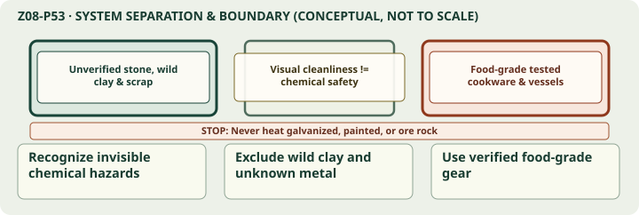

Z08-P53 · Rocks, minerals and materials · New manuscript
Separating Visual Material Recognition from Food-Contact Safety
Prevent unverified stones, clays, metals, and woods from being used in cooking, water boiling, or food storage.
When it applies · Evaluating natural materials near drinking water, cooking fires, and food preparation.
Equipment · Food-grade stainless steel, silicone, or tested NSF/FDA-compliant containers.

Actions
- Accept that visual cleanliness of wild stone, riverbed clay, driftwood, or salvaged metal cannot rule out lead, arsenic, copper, pesticides, or toxic wood sap.[R12, R14, R15]
- Never use unidentified stone slabs as cooking griddles, wild clay as boiling pots, or salvaged painted/galvanized metal for food or drinking water.[R12, R13, R14]
- Use dedicated, clean, food-grade containers and utensils, and verify wood species before any incidental utensil contact.[R12, R15, W11]
Failure recognition · Cooking on salvaged galvanized steel, painted scrap, or unverified sulfide stone releases toxic metal fumes and leaches contaminants into food.[R12, R14]
Verify · All water heating and food preparation stays confined to verified food-grade equipment.[R12, W11]
Stop or change course · Stop immediately and discard food or water that contacts unidentified metallic ore, treated lumber, galvanized/painted scrap, or suspect soil.[R12, R14]
Evidence and editorial notes
- R12 · U.S. EPA · Protect Your Family from Lead in Soil and Dust (2025)
- Section: Soil contamination and urban/industrial lead hazards · Conditions: Soils near historic structures, roadways, mines, or industrial sites
Support: Soils and clays near older painted structures, smelters, tailings, or roadways may harbor lead or industrial contaminants.
Limitations: Visual texture or color cannot detect lead, arsenic, or chemical contaminants; do not use unverified soil/clay for cookware or food contact. · Conflicting evidence: None noted.
Editorial note: Separates clay plasticity checks from chemical safety. · Specialist reviewer: Environmental health and soil scientist
Primary source · checked 2026-11-25 - R13 · National Park Service · Rocks and Minerals Geological Overview (Current web edition)
- Section: Rocks and Minerals overview · Conditions: Unrated stones near a fire or during thermal cycling
Support: Use agency-approved fire facilities and keep people away from cracking or shifting material.
Limitations: Editorial avoidance. The cited geology overview does not establish a safe rock type, moisture test or heating threshold. · Conflicting evidence: Conditions are recorded in the A03 audit.
Editorial note: Reinforces Z03/Z08 wet-rock spalling stop. · Specialist reviewer: Geologist and fire safety reviewer
Primary source · checked 2026-11-25 - R14 · USGS · National Minerals Information Center and Mineral Commodities (Current web edition)
- Section: Metallic ores, sulfides, and heavy-metal mineral toxicity · Conditions: Unidentified metallic-luster minerals, tailings, or bright oxidized crusts
Support: Sulfide ores and metallic minerals can contain lead, arsenic, mercury, or copper compounds hazardous via dust or hand-to-mouth transfer.
Limitations: Do not taste, lick, burn, or process unidentified metallic or brightly crusted minerals; wash hands after handling. · Conflicting evidence: None noted.
Editorial note: Blocks hazardous mineral extraction/handling. · Specialist reviewer: Geochemist and toxicologist
Primary source · checked 2026-11-25 - R15 · Minnesota DNR · Native Trees of Minnesota Identification Reference (Current web edition)
- Section: Regional wood species, grain, bark, and moisture variability · Conditions: Dead downed wood and natural bast fibers in Upper Midwest forests
Support: Wood density, grain straightness, resin content, and decay state vary widely by species, tree part, and moisture history.
Limitations: Visual grain inspection cannot certify structural load capacity; avoid cutting live trees where prohibited and reject punky or cracked wood. · Conflicting evidence: None noted.
Editorial note: Reconciles B007 wood notes with material limits. · Specialist reviewer: Forestry and wood-science specialist
Primary source · checked 2026-11-25 - W11 · CDC · Water Treatment Options When Hiking, Camping, or Traveling (current web edition)
- Section: Using light · Conditions: Portable UV disinfection device on a supported batch size of clear water
Support: Cloudiness interferes with UV. Use the device's stated volume, mixing and cycle instructions.
Limitations: Battery failure, cold battery voltage drop, or container UV opacity can silently defeat treatment. · Conflicting evidence: None; requires pre-clarification for turbid sources.
Editorial note: Requires verifying clarity, rated volume, and completed cycle indicator. · Specialist reviewer: Drinking-water treatment and equipment safety
Primary source · checked 2026-11-24
Source lineage · New manuscript (Z08 P16 governance boundary) · Classification · New manuscript.